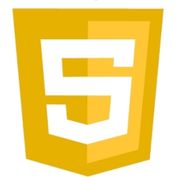
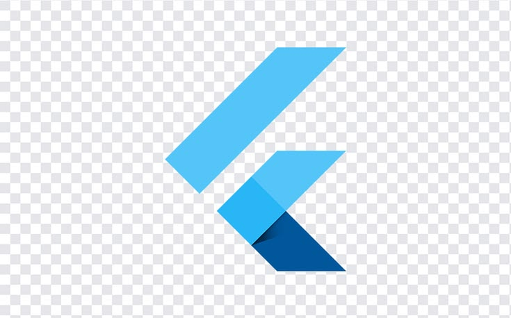
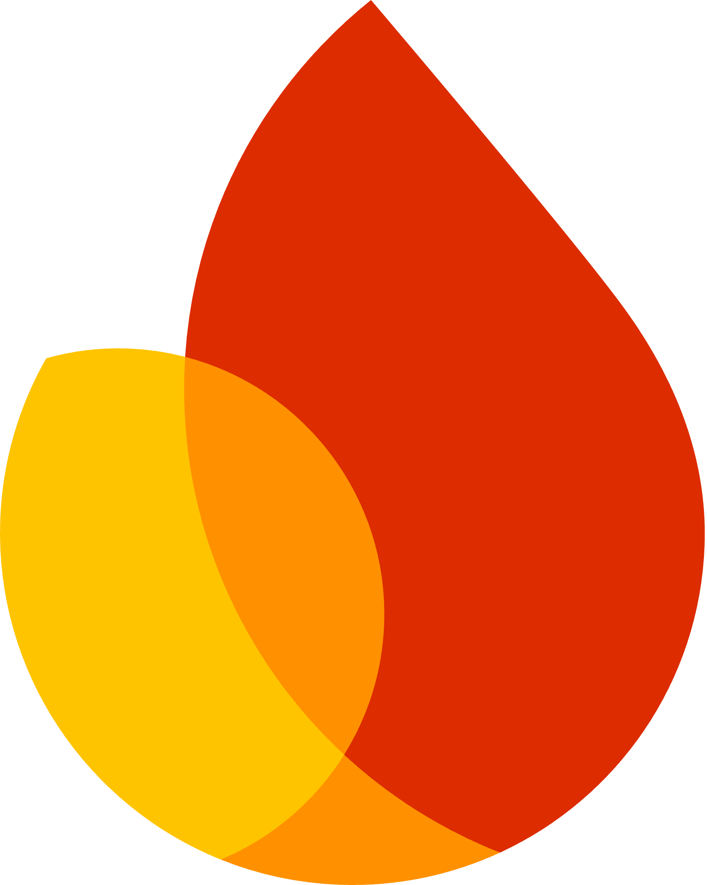

Développeuse Web Full-Stack Junior | Applications Web & Mobile
Création de sites modernes, interactifs et performants



Création de sites modernes, interactifs et performants



Bonjour, je m'appelle BIKIE BOUBENGA Elysee Brinah Fah.
Passionnée par la création et le design, j'ai toujours été fascinée
par la possibilité de donner vie à des idées, notamment à travers l'architecture,
les formes et les couleurs. C'est finalement dans l'informatique que j'ai trouvé
un autre terrain d'expression : la programmation me permet de construire autrement,
en concevant des sites web et des applications où technique et créativité se rencontrent.
J'aime relever de nouveaux défis, apprendre, expérimenter et découvrir sans cesse
de nouvelles façons de créer. Pour moi, programmer, c'est aussi une manière de communiquer,
mais avec un langage différent : celui du numérique !